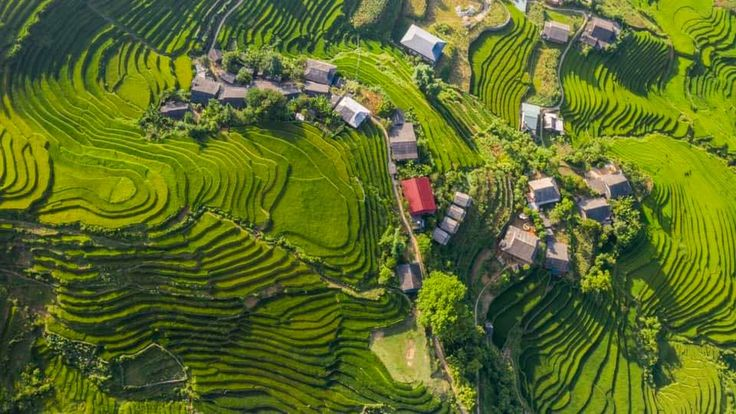

1. Vịnh Hạ Long (Quảng Ninh)
Vịnh Hạ Long được UNESCO công nhận là Di sản Thiên nhiên Thế giới với hàng nghìn đảo đá vôi kỳ vĩ trên làn nước xanh ngọc bích.
Miền Bắc mang vẻ đẹp cổ kính với hàng ngàn năm văn hóa cùng cảnh quan thiên nhiên hùng vĩ.
Vịnh Hạ Long được UNESCO công nhận là Di sản Thiên nhiên Thế giới với hàng nghìn đảo đá vôi kỳ vĩ trên làn nước xanh ngọc bích.
Hà Nội nổi tiếng với 36 phố phường cổ kính, Hồ Hoàn Kiếm, Chùa Một Cột và nét ẩm thực văn hóa lâu đời.

Sapa quanh năm mây phủ với những thửa ruộng bậc thang tuyệt đẹp và đỉnh Fansipan - mái nhà của Đông Dương.